Супер-совет по команде `fg`: когда Ctrl+Z спасает вашу терминальную сессию
Опубликовано 18 April 2026
- Проблема: занятый терминал
- три незаменимые команды
- Сценарий 1 : Длинная сборка
- Сценарий 2: Забытый редактор
- Сценарий 3 : приостановленный процесс opencode
- Сценарий 4: Управлять несколькими задачами одновременно
- Различия между fg, bg, Ctrl+Z, Ctrl+C и &
- Полный жизненный цикл задания
- Продвинутые советы
- Ловушки и типичные ошибки
- Сводная диаграмма
- Почему fg недооценён
- Техническая память: сигналы
- Вывод
- Ссылки
Вы бросаете`./gradlew build`, терминал заблокирован на 3 минуты, и вам нужно сделать что-то другое пока ждёте ? Не нужно открывать новую вкладку.`Ctrl+Z`приостанови процесс,`fg`Он возвращает его именно туда, где вы его оставили. Это самый недооценённый совет Unix в повседневной жизни разработчика.
- тик
-
[]
Проблема: занятый терминал
Каждый разработчик сталкивался с такой ситуацией:
$ ./gradlew build
> Building...Терминал заблокирован. Вы больше не можете вводить никакие команды. И вам нужно открыть файл, запустить`git status`, или проверить занятый порт.
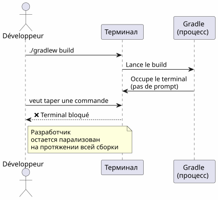
Большинство разработчиков открывают новый терминал. Но есть более элегантное, быстрое и нативное решение: управление задачами.
три незаменимые команды
Ctrl+Z — приостановить (SIGTSTP)
`Ctrl+Z`отправляет сигнал`SIGTSTP`в фоновый процесс. Процесс естьприостановлен— не убит — и терминал снова показывает приглашение.
$ ./gradlew build
> Building...
^Z
[1]+ Stoppé ./gradlew build
$Число в квадратных скобках`[1]`(two spaces)номер задания. Le `+`указывает задание по умолчанию.
fg — Вернуть на передний план
`fg`Переместить приостановленную задачу на передний план. Процесс возобновляется точно там, где он остановился.
$ fg
./gradlew build
> Building... (reprend où il en était)С конкретным номером задания:
$ fg %2bg — Возобновить в фоновом режиме
`bg`Возобновляет процесс без блокировки терминала. Идеально для длительных сборок.
$ bg
[1]+ ./gradlew build &
$Le `&`В конце означает, что процесс работает в фоновом режиме.
jobs — Перечислить задания оболочки
$ jobs
[1]- Stoppé vim README.md
[2]+ En cours ./gradlew build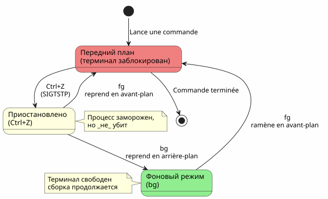
Сценарий 1 : Длинная сборка
Это самый распространённый вариант использования. Вы запускаете сборку Gradle, терминал заблокирован, и вам нужно сделать что-то другое.
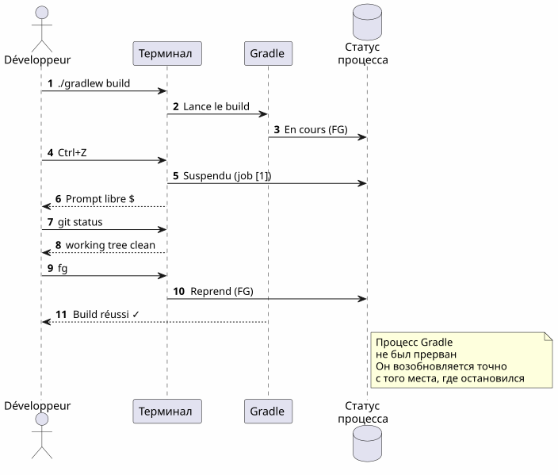
пошагово
$ ./gradlew build
> Building...
^Z
[1]+ Stoppé ./gradlew build
$ git status
On branch main
nothing to commit, working tree clean
$ fg
./gradlew build
> Building...
BUILD SUCCESSFUL in 2m 34sСценарий 2: Забытый редактор
Вы находитесь в`vim`, вам нужно обратиться к другому файлу, не выходя`vim`.
# Dans vim, en mode commande :
:shell
$ cat /path/to/other/file.txt
$ exit
# Retour dans vimНо это тяжело. С`Ctrl+Z`, это мгновенно :
# Dans vim, n'importe quel moment :
Ctrl+Z
[1]+ Stoppé vim README.md
$ cat /path/to/other/file.txt
# ... lire le fichier ...
$ fg
vim README.md
# Retour exact là où on en était, curseur en place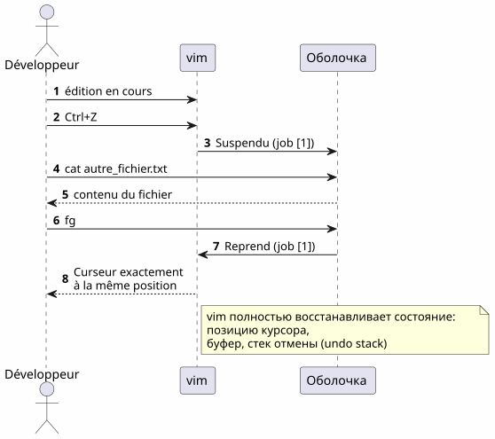
vim`восстанавливает идеально его состояние после`fg: положение курсора, содержимое буфера, история отмены — всё сохранено.
|
Сценарий 3 : приостановленный процесс opencode
Это сценарий, который послужил основой для этой статьи. Вы используете`opencode`(CLI‑инструмент pour piloter un LLM sur votre code), и процесс приостановлен.
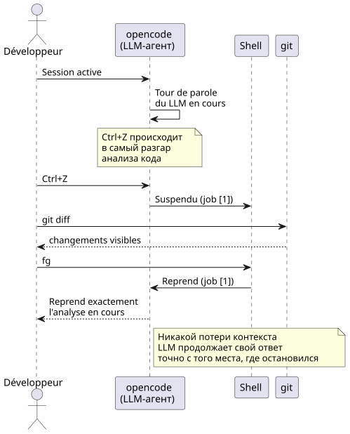
$ opencode
# ... session en cours, LLM analyse le code ...
^Z
[1]+ Stoppé opencode
$ git diff HEAD~1
# vérifier les changements récents
$ fg
opencode
# Le LLM reprend là où il s'était arrêtéПреимущество двойное:
-
Нет потери контекста: сессия LLM, история диалога, открытые файлы — всё сохранено
-
Нет перезагрузки: не нужно перезапускать opencode, перезагружать контекст, повторно объяснять проблему LLM
Сценарий 4: Управлять несколькими задачами одновременно
fg et `bg`принимают номер задачи, чтобы нацелиться на конкретный процесс, когда несколько из них приостановлены.
$ vim config.yml
^Z
[1]+ Stoppé vim config.yml
$ ./gradlew test
^Z
[2]+ Stoppé ./gradlew test
$ htop
^Z
[3]+ Stoppé htop
$ jobs
[1] Stoppé vim config.yml
[2]- Stoppé ./gradlew test
[3]+ Stoppé htop
$ fg %2
./gradlew test
# Le build reprend en avant-plan
$ bg %3
[3] htop &
# htop reprend en arrière-plan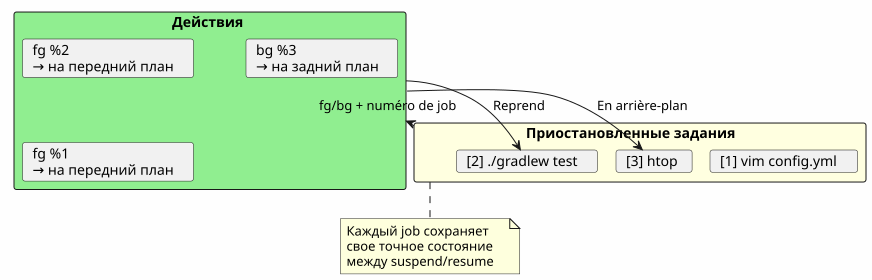
Сводка команд заданий
| Заказ | Эффект | Пример |
|---|---|---|
|
Приостановить процесс в переднем плане |
Отправка`SIGTSTP` |
|
Возобнови задание по умолчанию на переднем плане |
|
|
Возобновляет задание n на переднем плане |
|
|
Возобновляет джоб по умолчанию в фоновом режиме |
|
|
Возобнови задание n в фоновом режиме |
|
|
Список заданий текущей оболочки |
|
|
Закончи работу n |
|
Различия между fg, bg, Ctrl+Z, Ctrl+C и &
Многие разработчики путают эти механизмы. Вот решительное уточнение.
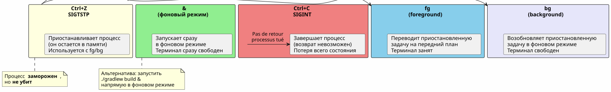
| Сочетание клавиш/Команда | сигнал | Эффект | Вернуться назад? |
|---|---|---|---|
|
|
Приостановить процесс (замороженный, в памяти) |
Да:`fg` ou |
|
|
Убей процесс (завершённый) |
Нет: процесс уничтожен |
|
|
Убей процесс + дамп ядра |
Нет: процесс уничтожен |
|
— |
Запусти напрямую в фоновом режиме |
`fg`чтобы вернуть его на передний план |
| `Ctrl+Z`естьнеразрушающий. Процесс заморожен как есть, в памяти. Вы можете немедленно продолжить с`fg`Это пауза, не стоп. |
Полный жизненный цикл задания
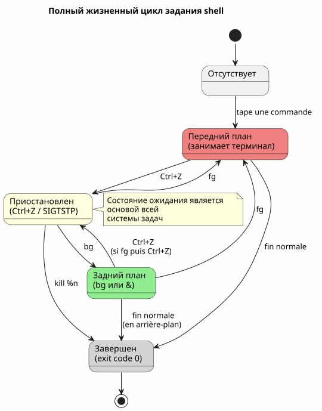
Продвинутые советы
fg с последней работой и чередованием
fg`без аргумента возвращает помеченную задачу+(самый последний). Но вы можете также использовать%-`pour нацеливания на предыдущую работу :
$ vim file1.txt
^Z
[1]+ Stoppé vim file1.txt
$ vim file2.txt
^Z
[2]+ Stoppé vim file2.txt
$ fg # ramène job [2] (le plus récent)
$ fg %- # ramène job [1] (le précédent)убить работу правильно
$ jobs
[1]- Stoppé vim config.yml
[2]+ Stoppé ./gradlew test
$ kill %2 # envoie SIGTERM au job 2
$ kill -9 %1 # envoie SIGKILL au job 1 (force)disown : отсоединить от оболочки
disown`Удаляет задание из таблицы заданий оболочки. Процесс продолжает работать, но его нельзя более вернуть с`fg:
$ ./gradlew build &
[1] 12345
$ disown %1
# Le processus continue mais n'est plus lié au shell
# Ça survives à la fermeture du terminalСочетать с nohup для длительных процессов
Чтобы процесс продолжал работать после закрытия терминала:
$ nohup ./gradlew build &
[1] 12345
$ disown %1
# Le build continue même si vous fermez le terminal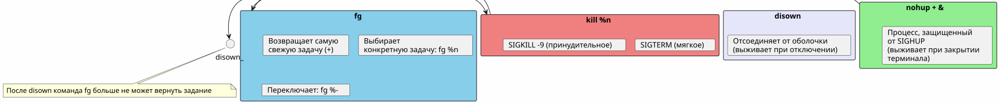
Ловушки и типичные ошибки
Перепутать Ctrl+Z и Ctrl+C
Это самая частая ошибка.`Ctrl+C`убивает процесс.`Ctrl+Z`его приостанавливает. Если вы нажимаете на`Ctrl+C`рефлекторно всё состояние потеряно — открытые файлы, сеансы LLM, текущие сборки
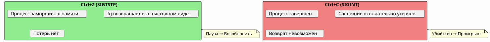
Задания локальны для оболочки
jobs, fg et `bg`работают только в оболочке, которая запустила процессы. Если вы откроете новый терминал, вы не увидите заданий другого.
# Terminal 1
$ vim file.txt
^Z
[1]+ Stoppé vim file.txt
# Terminal 2 (nouveau)
$ jobs
# (rien — les jobs sont locaux au shell)Для просмотра системных процессов используйте`ps` ou htop:
ps aux | grep vimЗадания не сохраняются при закрытии оболочки
Если вы закроете терминал, все приостановленные и фоновые задания будут удалены. Чтобы процесс остался живым, используйте`nohup`+disown:
$ nohup ./gradlew build &
[1] 12345
$ disown %1
# Fermer le terminal → le build continueИнтерактивные процессы и fg
Некоторые интерактивные программы не работают хорошо после одного`Ctrl+Z`+fg. Это редко, но случается :
-
Некоторые программы, которые используют сигналы (vim, htop, less хорошо справляются`Ctrl+Z`)
-
Долгие сетевые программы (ssh, opencode) обычно корректно получают
-
Программы, которые изменяют терминал (ncurses), могут иногда оставлять терминал в неожиданном состоянии
В случае повреждённого терминала после`fg`, введите :
resetСводная диаграмма
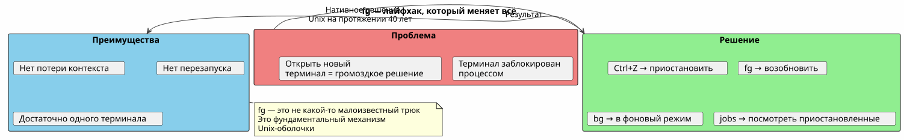
Почему fg недооценён
Большинство современных разработчиков открывают`fg`поздно, или даже никогда. Несколько причин :
-
IDE скрывают терминал: VS Code предлагает встроенный терминал, но множественные вкладки делают`fg`внешне менее необходимо
-
Графические инструменты заменяют CLI: файловые менеджеры, системные мониторы, графические клиенты Git
-
tmux и screen: эти мультиплексоры решают одну и ту же проблему по-разному, но`fg`проще и всегда доступен
Однако,`fg`есть :
-
Универсальный: присутствует во всех POSIX-оболочках (bash, zsh, fish…)
-
Без зависимости: не нужно устанавливать tmux или screen
-
Снимок: два удара (
Ctrl+Z`потом`fg) для приостановки и возобновления -
Хранитель контекста: состояние процесса неповреждено
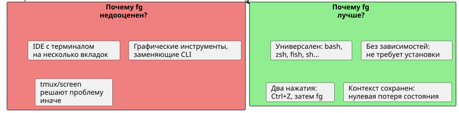
Техническая память: сигналы
Для любопытных, вот сигналы, которые участвуют:
| Сигнал | Имя | Отправлено | Эффект |
|---|---|---|---|
2 |
|
|
Прерывание — завершает процесс |
3 |
|
|
Выходит с дампом ядра |
18 |
|
|
Интерактивная остановка — приостанавливает процесс |
19 |
|
|
Продолжить — возобновляет приостановленный процесс |
15 |
|
|
собственное окончание |
9 |
|
|
Принудительное завершение (неперехватываемое) |
Полный поток :
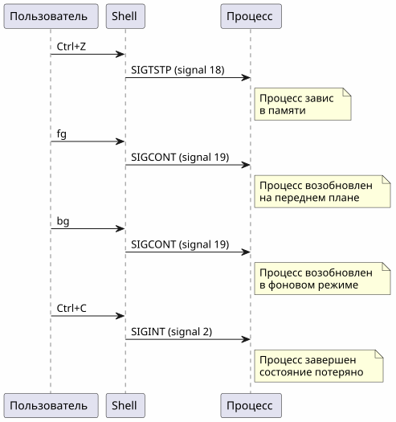
Вывод
`fg`Это не скрытый совет — это фундаментальный механизм Unix-оболочки, доступный с 1970-х годов. То, что большинство разработчиков им пренебрегает, является симптомом нашей эпохи: IDE и мультиплексоры отдалили нас от основ.
Но когда вы на сервере SSH, в минимальном терминале, или просто используя`opencode`et que LLM работает вовсю —Ctrl+Z, fg, bg, `jobs`Они ваши лучшие друзья.
_ Ctrl+Z приостанавливает, fg возобновляет. Это пауза‑play терминала. _
Ссылки
-
man bash— секция JOB CONTROL -
man signal— список сигналов POSIX -
Продвинутое руководство по написанию сценариев Bash — управление заданиями